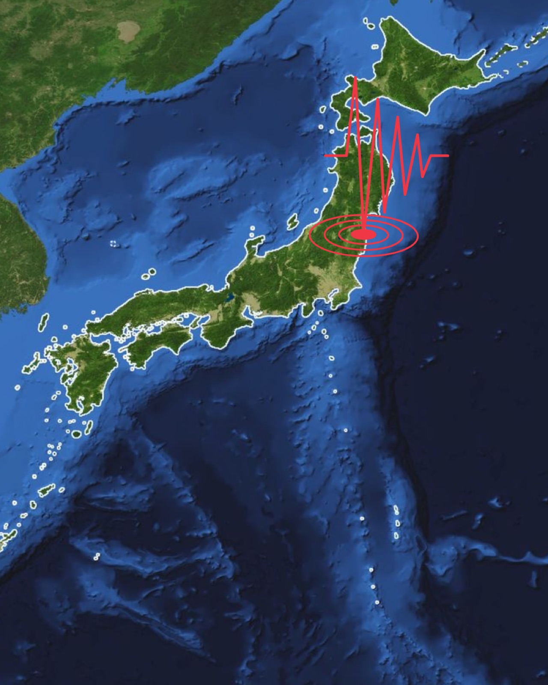

1º de setembro é o Bōsai no Hi, o Dia de Prevenção de Desastres no Japão. A data foi criada em memória do Grande Terremoto de Kanto de 1923 e reforça uma ideia central da vida japonesa: desastre não se improvisa.

O que acontece
Escolas, empresas, prefeituras e comunidades costumam realizar treinamentos, revisão de rotas de evacuação, checagem de kits e exercícios de comunicação.
Para brasileiros no Japão
O essencial é saber onde evacuar, como receber alertas, quais documentos levar, onde fica o abrigo da cidade e como falar o endereço em japonês.
Mais que terremoto
Bōsai inclui terremotos, tufões, enchentes, deslizamentos, incêndios e interrupções de transporte.